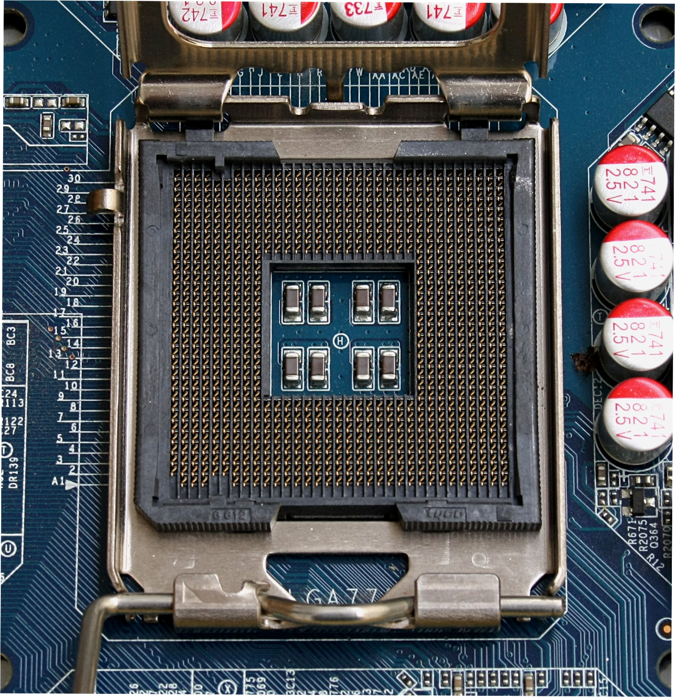

|  |
In computer hardware, a CPU socket or CPU slot contains one or more mechanical components providing mechanical and electrical connections between a microprocessor and a printed circuit board (PCB). This allows for placing and replacing the central processing unit (CPU) without soldering. Common sockets have retention clips that apply a constant force, which must be overcome when a device is inserted. For chips with many pins, zero insertion force (ZIF) sockets are preferred. Common sockets include Pin Grid Array (PGA) or Land Grid Array (LGA). These designs apply a compression force once either a handle (PGA type) or a surface plate (LGA type) is put into place. This provides superior mechanical retention while avoiding the risk of bending pins when inserting the chip into the socket. Certain devices use Ball Grid Array (BGA) sockets, although these require soldering and are generally not considered user replaceable. CPU sockets are used on the motherboard in desktop and server computers. Because they allow easy swapping of components, they are also used for prototyping new circuits. Laptops typically use surface-mount CPUs, which take up less space on the motherboard than a socketed part. As the pin density increases in modern sockets, increasing demands are placed on the printed circuit board fabrication technique, which permits the large number of signals to be successfully routed to nearby components. Likewise, within the chip carrier, the wire bonding technology also becomes more demanding with increasing pin counts and pin densities. Each socket technology will have specific reflow soldering requirements. As CPU and memory frequencies increase, above 30 MHz or thereabouts, electrical signalling increasingly shifts to differential signaling over parallel buses, bringing a new set of signal integrity challenges. The evolution of the CPU socket amounts to a coevolution of all these technologies in tandem. Modern CPU sockets are almost always designed in conjunction with a heat sink mounting system, or in lower power devices, other thermal considerations. |
|
A CPU socket is made of plastic, and often comes with a lever or latch, and with metal contacts for each of the pins or lands on the CPU. Many packages are keyed to ensure the proper insertion of the CPU. CPUs with a PGA (pin grid array) package are inserted into the socket and, if included, the latch is closed. CPUs with an LGA (land grid array) package are inserted into the socket, the latch plate is flipped into position atop the CPU, and the lever is lowered and locked into place, pressing the CPU's contacts firmly against the socket's lands and ensuring a good connection, as well as increased mechanical stability. |
|